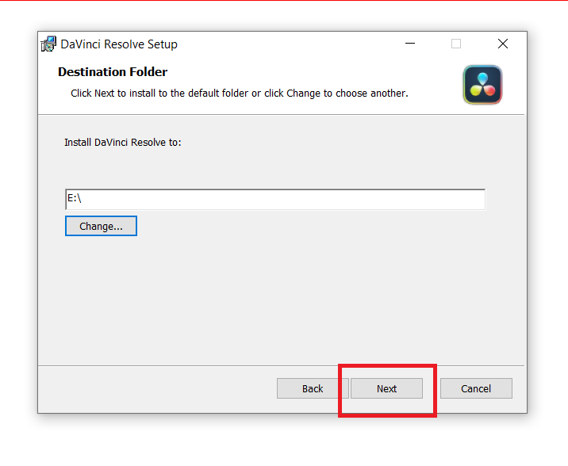
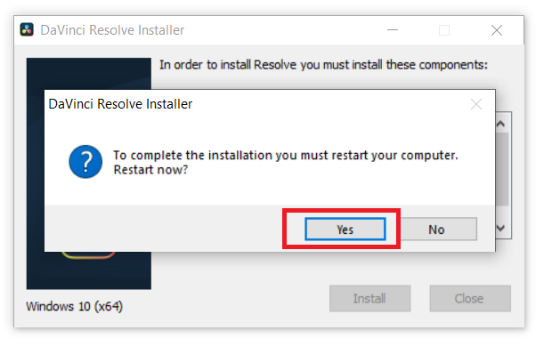

Install DaVinci Resolve
- For Windows
- Step 1: Go to the Davinci Resolve website. Scroll down a little, and on the left side, we could see the download button. Click on the Free Download Now.
- Step 2: A box appears on the screen. In the image we could see, there are two versions of Davinci Resolve, you could download any of them. Click on the Windows button, in the left box.
- Step 3: Before the download begins, we have to fill out a form. The form asks for basic information like Name, company, email, phone, country, state, etc. Then, click on the Submit button.

- Step 4: As, of now when we are writing this blog, the latest version of the Davinci Resolve video editor is 18.1.3. A new box opens, click on the red button, as shown in the image. The download of the software begins. The name of the file is Davinci_Resolve_18.1.3_Windows.zip, and the size of the software is 3.1GB.
- Step 5: After the download is completed, right-click on the zip file, and click on the Extract Here option.

- Step 6: After the file is extracted, a .exe file with the same name as of zip file will appear. Double-click on the file to install it.
- Step 7: Davinci Resolve Installer has opened. Click on the Install button. This installs the requirements for the software to run.
- Step 8: The installation starts, it may take some time, depending on the processing power of your computer.
- Step 9: After, installing all the required libraries and software, we are ready for the setup. Click on the Next button.
- Step 10: End-User License Agreement appears on the screen. Click on the radio button, I accept the terms in the License Agreement, then, click on the Next button.
- Step 11: Select the destination folder. Then, click on the next button.
- 
- Step 12:Now, we are ready to install the software. Click on the Install button.
- Step 13: The installation begins, as the software size is large it may take 10-15 minutes for the complete installation.
- Step 14: The Davinci Resolve video editor has been successfully installed. Then, click on the Finish button.
- Step 15: Then, we will have a pop-up on our screen, saying that for a complete installation, we must restart our computer. Click on the Yes button.
- 
- Step 16: After restarting your computer, search Davinci Resolve in your search box, we could see that the software has been successfully installed. We have successfully completed all the steps of installation, below image shows the home page of the Davinci Video editor.